Chapter 11 Seasonal differences in eastern Greenland
load("data/data.Rdata")
load("data/beta.Rdata")
genome_metadata <- genome_metadata %>%
mutate(phylum = case_when(
phylum == "Bacillota_A" ~ "Bacillota",
phylum == "Bacillota_C" ~ "Bacillota",
phylum == "Bacillota_B" ~ "Bacillota",
phylum == "Bacillota_I" ~ "Bacillota",
TRUE ~ phylum))
day_info <- read_csv("data/sample_metadata.csv")
sample_metadata <- sample_metadata %>%
left_join(., day_info %>% select(sample, day, season), by="sample") %>%
filter(locality == "Ittoqqortoormiit" & day %in% c("day_1", "Unknown"))
genome_counts_filt <- genome_counts_filt %>%
select(one_of(c("genome",sample_metadata$sample)))%>%
filter(rowSums(. != 0, na.rm = TRUE) > 0) %>%
select_if(~!all(. == 0))
genome_metadata <- genome_metadata %>%
semi_join(., genome_counts_filt, by = "genome") %>%
arrange(match(genome,genome_counts_filt$genome))
genome_tree <- keep.tip(genome_tree, tip=genome_metadata$genome)# A tibble: 2 × 2
season n
<chr> <int>
1 summer 29
2 winter 1411.1 Taxonomy
Number of bacteria phyla
genome_metadata %>%
filter(domain == "Bacteria")%>%
dplyr::select(phylum) %>%
unique() %>%
pull() %>%
length()[1] 12genome_counts_filt %>%
mutate(across(-genome, ~ . / sum(.))) %>%
pivot_longer(-genome, names_to = "sample", values_to = "count") %>%
left_join(., genome_metadata, by = join_by(genome == genome)) %>%
left_join(., sample_metadata, by = join_by(sample == sample)) %>%
filter(count > 0) %>%
ggplot(., aes(x=sample,y=count, fill=phylum, group=phylum)) +
geom_bar(stat="identity", colour="white", linewidth=0.1) +
scale_fill_manual(values=phylum_colors) +
facet_grid(~ season, scale="free", space="free")+
guides(fill = guide_legend(ncol = 1)) +
theme(
axis.title.x = element_blank(),
axis.title.y = element_text(size = 16),
panel.background = element_blank(),
panel.border = element_blank(),
panel.grid.major = element_blank(),
panel.grid.minor = element_blank(),
strip.background = element_rect(fill = "white"),
strip.text = element_text(size = 14, lineheight = 0.6),
strip.placement = "outside",
axis.text.y = element_text(size = 12),
axis.text.x = element_blank(),
axis.ticks.x = element_blank(),
axis.line = element_line(
linewidth = 0.5,
linetype = "solid",
colour = "black"
)
) +
labs(fill = "Phylum", y = "Relative abundance", x = "Samples")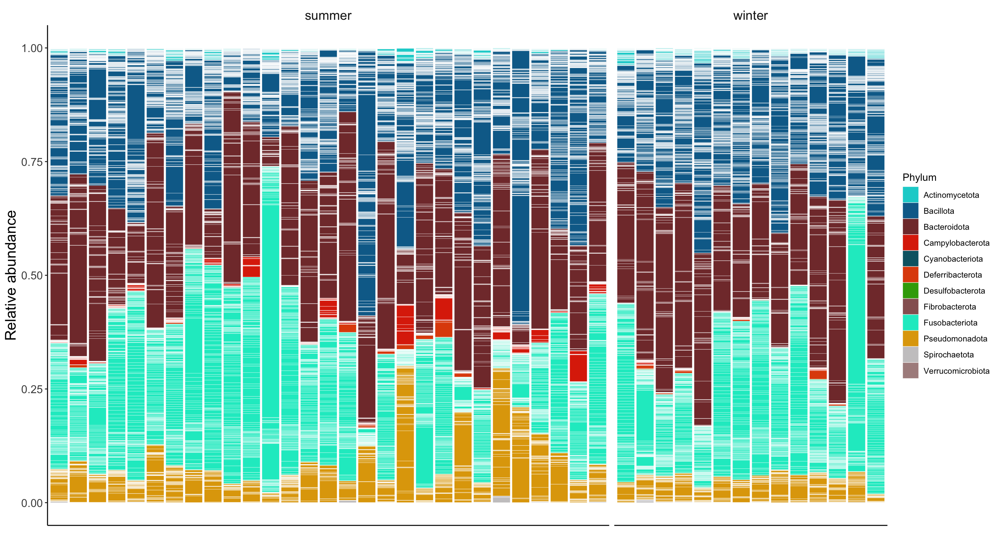
11.1.1 Phylum relative abundances
phylum_summary <- genome_counts_filt %>%
mutate(across(-genome, ~ . / sum(.))) %>%
pivot_longer(-genome, names_to = "sample", values_to = "count") %>%
left_join(sample_metadata, by = join_by(sample == sample)) %>%
left_join(genome_metadata, by = join_by(genome == genome)) %>%
group_by(sample,phylum,season) %>%
summarise(relabun=sum(count))phylum_summary %>%
group_by(season, phylum) %>%
summarise(
total_mean = mean(relabun * 100, na.rm = T),
total_sd = sd(relabun * 100, na.rm = T)
) %>%
arrange(-total_mean) %>%
mutate(total = str_c(round(total_mean, 4), "±", round(total_sd, 3))) %>%
dplyr::select(phylum, total, season) %>%
pivot_wider(names_from = season, values_from = total) %>%
tt()| phylum | winter | summer |
|---|---|---|
| Bacteroidota | 31.0918±11.307 | 28.9573±11.624 |
| Bacillota | 30.95±5.326 | 28.8019±12.445 |
| Fusobacteriota | 29.9633±12.727 | 29.1155±14.948 |
| Pseudomonadota | 5.4093±1.419 | 9.5879±7.023 |
| Actinomycetota | 1.8368±0.999 | 1.1903±0.878 |
| Campylobacterota | 0.2612±0.276 | 1.8233±2.241 |
| Deferribacterota | 0.3523±0.518 | 0.3927±0.759 |
| Spirochaetota | 0.0872±0.157 | 0.1077±0.279 |
| Desulfobacterota | 0.03±0.066 | 0.0018±0.004 |
| Cyanobacteriota | 0.018±0.013 | 0.0216±0.011 |
| Fibrobacterota | 0±0 | 0±0 |
| Verrucomicrobiota | 0±0 | 0±0 |
11.1.2 Differences in phylum (ancombc)
phylo_samples <- sample_metadata %>%
column_to_rownames("sample") %>%
sample_data()
phylo_genome <- genome_counts_filt %>%
select(one_of(c("genome", rownames(phylo_samples)))) %>%
column_to_rownames("genome") %>%
otu_table(., taxa_are_rows = TRUE)
phylo_taxonomy <- genome_metadata %>%
filter(genome %in% rownames(phylo_genome)) %>%
mutate(genome2 = genome) %>%
column_to_rownames("genome2") %>%
dplyr::select(domain, phylum, class, order, family, genus, species, genome) %>%
as.matrix() %>%
tax_table()
physeq_genome_itto <- phyloseq(phylo_genome, phylo_taxonomy, phylo_samples)
physeq_genome_itto <- prune_taxa(taxa_sums(physeq_genome_itto)>0, physeq_genome_itto)ancom_rand_output_phylum_itto = ancombc2(
data = physeq_genome_itto,
assay_name = "counts",
tax_level = "phylum",
fix_formula = "season",
p_adj_method = "BH",
pseudo_sens = TRUE,
prv_cut = 0,
lib_cut = 0,
s0_perc = 0.05,
group = "season",
struc_zero = TRUE,
neg_lb = FALSE,
alpha = 0.05,
n_cl = 2,
verbose = TRUE,
global = TRUE,
pairwise = TRUE,
dunnet = FALSE,
trend = FALSE,
iter_control = list(
tol = 1e-5,
max_iter = 20,
verbose = FALSE
),
em_control = list(tol = 1e-5, max_iter = 100),
mdfdr_control = list(fwer_ctrl_method = "holm", B = 100),
trend_control = NULL
)ancom_rand_output_phylum_itto$res %>%
dplyr::select(taxon, lfc_seasonwinter, q_seasonwinter) %>%
filter(q_seasonwinter < 0.05) %>%
dplyr::arrange(q_seasonwinter) taxon lfc_seasonwinter q_seasonwinter
1 Campylobacterota -1.615458 0.0002730483
2 Desulfobacterota 1.683639 0.019859596011.2 Alpha diversity
richness <- genome_counts_filt %>%
column_to_rownames(var = "genome") %>%
dplyr::select(where(~ !all(. == 0))) %>%
hilldiv(., q = 0) %>%
t() %>%
as.data.frame() %>%
dplyr::rename(richness = 1) %>%
rownames_to_column(var = "sample")
neutral <- genome_counts_filt %>%
column_to_rownames(var = "genome") %>%
dplyr::select(where(~ !all(. == 0))) %>%
hilldiv(., q = 1) %>%
t() %>%
as.data.frame() %>%
dplyr::rename(neutral = 1) %>%
rownames_to_column(var = "sample")
phylogenetic <- genome_counts_filt %>%
column_to_rownames(var = "genome") %>%
dplyr::select(where(~ !all(. == 0))) %>%
hilldiv(., q = 1, tree = genome_tree) %>%
t() %>%
as.data.frame() %>%
dplyr::rename(phylogenetic = 1) %>%
rownames_to_column(var = "sample")
alpha_div <- richness %>%
full_join(neutral, by = join_by(sample == sample)) %>%
full_join(phylogenetic, by = join_by(sample == sample))alpha_div %>%
pivot_longer(-sample, names_to = "metric", values_to = "value") %>%
mutate(metric=factor(metric,levels=c("richness","neutral","phylogenetic", "functional"))) %>%
left_join(sample_metadata, by = join_by(sample == sample)) %>%
ggplot(aes(y = value, x = season, group=season, color=season, fill=season)) +
geom_boxplot(alpha = 0.5, outlier.shape = NA) +
geom_jitter(width = 0.2, alpha = 0.5) +
facet_wrap(. ~factor(metric, labels=c("richness" = "Richness", "neutral" = "Neutral", "phylogenetic" = "Phylogenetic")), scales = "free", ncol = 5) +
coord_cartesian(xlim = c(1, NA)) +
theme_classic() +
theme(
strip.background = element_blank(),
strip.text = element_text(size =12, lineheight = 0.6),
panel.grid.minor.x = element_line(size = .1, color = "grey"),
axis.title.x = element_blank(),
axis.title.y = element_blank(),
axis.text.x = element_blank()
)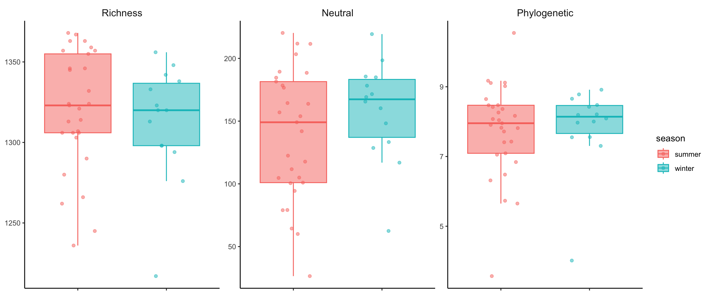
11.3 Beta diversity
Richness
beta_q0n_mat <- as.matrix(beta_q0n$S)
beta_q0n_filtered <- beta_q0n_mat[rownames(beta_q0n_mat) %in% sample_metadata$sample,
colnames(beta_q0n_mat) %in% sample_metadata$sample]
beta_q0n <- as.dist(beta_q0n_filtered)adonis2(beta_q0n ~ season,
data = sample_metadata %>% arrange(match(sample, labels(beta_q0n))),
permutations = 999) %>%
broom::tidy() %>%
tt()| term | df | SumOfSqs | R2 | statistic | p.value |
|---|---|---|---|---|---|
| Model | 1 | 0.01402006 | 0.08777078 | 3.944844 | 0.001 |
| Residual | 41 | 0.14571487 | 0.91222922 | NA | NA |
| Total | 42 | 0.15973493 | 1.00000000 | NA | NA |
beta_q0n %>%
vegan::metaMDS(., trymax = 500, k = 2, trace=0) %>%
vegan::scores() %>%
as_tibble(., rownames = "sample") %>%
dplyr::left_join(sample_metadata, by = join_by(sample == sample)) %>%
group_by(season) %>%
mutate(x_cen = mean(NMDS1, na.rm = TRUE)) %>%
mutate(y_cen = mean(NMDS2, na.rm = TRUE)) %>%
ungroup() %>%
ggplot(aes(x = NMDS1, y = NMDS2, color = season)) +
geom_point(size = 4) +
geom_segment(aes(x = x_cen, y = y_cen, xend = NMDS1, yend = NMDS2), alpha = 0.9, show.legend = FALSE) +
theme_classic() +
theme(
axis.text.x = element_text(size = 12),
axis.text.y = element_text(size = 12),
axis.title = element_text(size = 12, face = "bold"),
axis.text = element_text(face = "bold", size = 12),
panel.background = element_blank(),
axis.line = element_line(size = 0.5, linetype = "solid", colour = "black"),
legend.text = element_text(size = 12),
legend.title = element_text(size = 14),
legend.position = "right", legend.box = "vertical"
) +
labs(color='Season')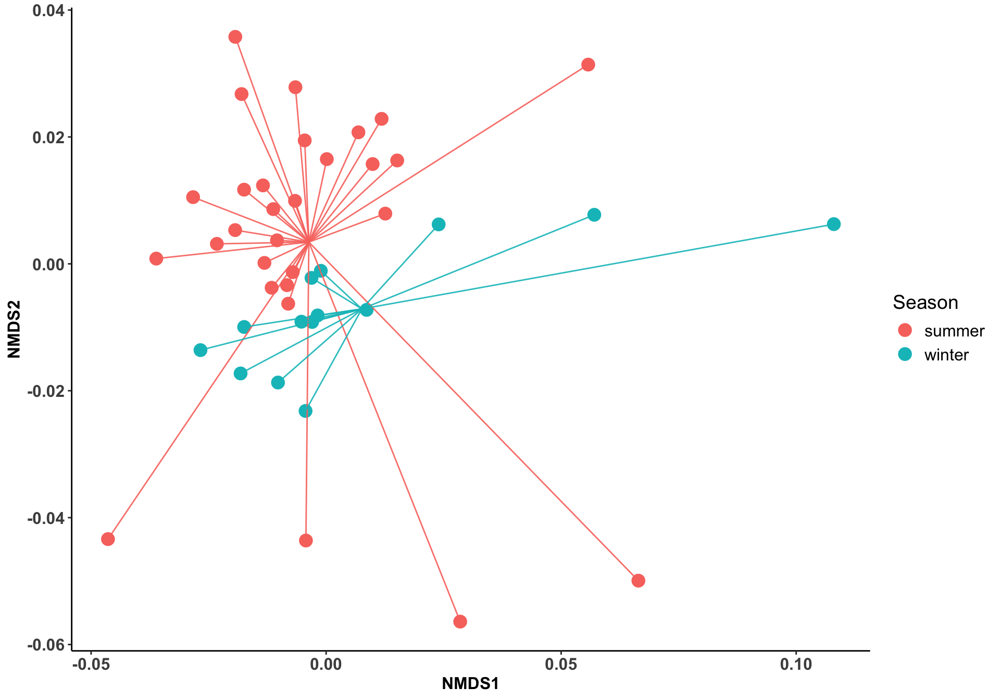
Neutral
beta_q1n_mat <- as.matrix(beta_q1n$S)
beta_q1n_filtered <- beta_q1n_mat[rownames(beta_q1n_mat) %in% sample_metadata$sample,
colnames(beta_q1n_mat) %in% sample_metadata$sample]
beta_q1n_dis <- as.dist(beta_q1n_filtered)
sample_metadata_ordered <- sample_metadata %>%
arrange(match(sample,labels(beta_q1n_dis))) %>%
column_to_rownames(., "sample")adonis2(beta_q1n_dis ~ season,
data = sample_metadata_ordered,
permutations = 999) %>%
broom::tidy() %>%
tt()| term | df | SumOfSqs | R2 | statistic | p.value |
|---|---|---|---|---|---|
| Model | 1 | 0.3134597 | 0.06156993 | 2.68999 | 0.006 |
| Residual | 41 | 4.7776575 | 0.93843007 | NA | NA |
| Total | 42 | 5.0911172 | 1.00000000 | NA | NA |
beta_q1n_dis %>%
vegan::metaMDS(., trymax = 500, k = 2, trace=0) %>%
vegan::scores() %>%
as_tibble(., rownames = "sample") %>%
dplyr::left_join(sample_metadata, by = join_by(sample == sample)) %>%
group_by(season) %>%
mutate(x_cen = mean(NMDS1, na.rm = TRUE)) %>%
mutate(y_cen = mean(NMDS2, na.rm = TRUE)) %>%
ungroup() %>%
ggplot(aes(x = NMDS1, y = NMDS2, color = season)) +
geom_point(size = 4) +
geom_segment(aes(x = x_cen, y = y_cen, xend = NMDS1, yend = NMDS2), alpha = 0.9, show.legend = FALSE) +
theme_classic() +
theme(
axis.text.x = element_text(size = 12),
axis.text.y = element_text(size = 12),
axis.title = element_text(size = 12, face = "bold"),
axis.text = element_text(face = "bold", size = 12),
panel.background = element_blank(),
axis.line = element_line(size = 0.5, linetype = "solid", colour = "black"),
legend.text = element_text(size = 12),
legend.title = element_text(size = 14),
legend.position = "right", legend.box = "vertical"
) +
labs(color='Season')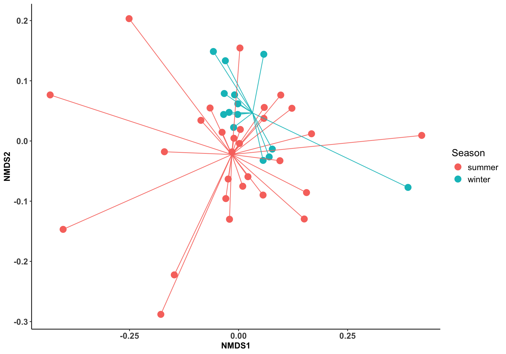
Phylogenetic
beta_q1p_mat <- as.matrix(beta_q1p$S)
beta_q1p_filtered <- beta_q1p_mat[rownames(beta_q1p_mat) %in% sample_metadata$sample,
colnames(beta_q1p_mat) %in% sample_metadata$sample]
beta_q1p_dis <- as.dist(beta_q1p_filtered)
sample_metadata_ordered <- sample_metadata %>%
arrange(match(sample,labels(beta_q1p_dis))) %>%
column_to_rownames(., "sample")adonis2(beta_q1p_dis ~ season,
data = sample_metadata_ordered,
permutations = 999) %>%
broom::tidy() %>%
tt()| term | df | SumOfSqs | R2 | statistic | p.value |
|---|---|---|---|---|---|
| Model | 1 | 0.04949066 | 0.04143243 | 1.772154 | 0.149 |
| Residual | 41 | 1.14500018 | 0.95856757 | NA | NA |
| Total | 42 | 1.19449083 | 1.00000000 | NA | NA |
beta_q1p_dis %>%
vegan::metaMDS(., trymax = 500, k = 2, trace=0) %>%
vegan::scores() %>%
as_tibble(., rownames = "sample") %>%
dplyr::left_join(sample_metadata, by = join_by(sample == sample)) %>%
group_by(season) %>%
mutate(x_cen = mean(NMDS1, na.rm = TRUE)) %>%
mutate(y_cen = mean(NMDS2, na.rm = TRUE)) %>%
ungroup() %>%
ggplot(aes(x = NMDS1, y = NMDS2, color = season)) +
geom_point(size = 4) +
geom_segment(aes(x = x_cen, y = y_cen, xend = NMDS1, yend = NMDS2), alpha = 0.9, show.legend = FALSE) +
theme_classic() +
theme(
axis.text.x = element_text(size = 12),
axis.text.y = element_text(size = 12),
axis.title = element_text(size = 12, face = "bold"),
axis.text = element_text(face = "bold", size = 12),
panel.background = element_blank(),
axis.line = element_line(size = 0.5, linetype = "solid", colour = "black"),
legend.text = element_text(size = 12),
legend.title = element_text(size = 14),
legend.position = "right", legend.box = "vertical"
) +
labs(color='Season')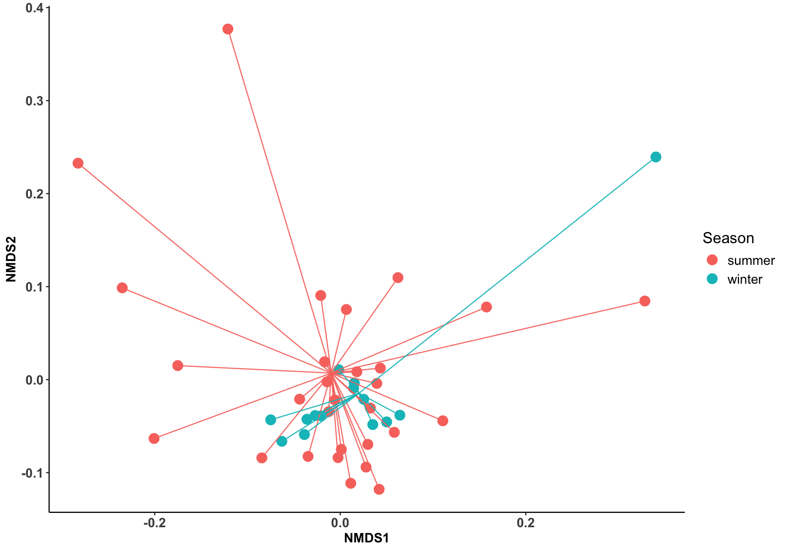
11.4 Differences in MAG abundances: Ancombc2
ancom_rand_output_mag_itto_all = ancombc2(
data = physeq_genome_itto,
assay_name = "counts",
tax_level = NULL,
fix_formula = "season",
p_adj_method = "BH",
pseudo_sens = TRUE,
prv_cut = 0,
lib_cut = 0,
s0_perc = 0.05,
group = "season",
struc_zero = TRUE,
neg_lb = FALSE,
alpha = 0.05,
n_cl = 2,
verbose = TRUE,
global = FALSE,
pairwise = FALSE,
dunnet = FALSE,
trend = FALSE,
iter_control = list(
tol = 1e-5,
max_iter = 50,
verbose = FALSE
),
em_control = list(tol = 1e-5, max_iter = 100),
mdfdr_control = list(fwer_ctrl_method = "BH", B = 100),
trend_control = NULL
)11.4.0.1 Structural zeros
Total number of structural zeros
structural_zeros <- ancom_rand_output_mag_itto_all$zero_ind
structural_zeros_df <- as.data.frame(structural_zeros) %>%
column_to_rownames(., "taxon")
structural_zero_taxa <- rownames(structural_zeros_df)[apply(structural_zeros_df, 1, any)]
structural_zero_groups <- structural_zeros_df[structural_zero_taxa, , drop = FALSE] %>%
rename("summer"=1) %>%
rename("winter"=2)
nrow(structural_zero_groups)[1] 28Structural zeros in summer
[1] 2structural_zero_groups %>%
filter(summer==TRUE) %>%
rownames_to_column(., "genome") %>%
left_join(., genome_metadata, by="genome") %>%
count(phylum, name = "sample_count") %>%
arrange(desc(sample_count)) phylum sample_count
1 Bacillota 1
2 Pseudomonadota 1Structural zeros in winter
[1] 26structural_zero_groups %>%
filter(winter==TRUE) %>%
rownames_to_column(., "genome") %>%
left_join(., genome_metadata, by="genome") %>%
count(phylum, name = "sample_count") %>%
arrange(desc(sample_count)) phylum sample_count
1 Bacillota 11
2 Pseudomonadota 7
3 Actinomycetota 3
4 Bacteroidota 3
5 Verrucomicrobiota 2taxonomy <- data.frame(physeq_genome_itto@tax_table) %>%
rownames_to_column(., "taxon") %>%
mutate_at(vars(phylum, order, family, genus, species), ~ str_replace(., "[dpcofgs]__", ""))
ancombc_rand_table_mag_itto <- ancom_rand_output_mag_itto_all$res %>%
dplyr::select(taxon, lfc_seasonwinter, q_seasonwinter) %>%
filter(q_seasonwinter < 0.05) %>%
dplyr::arrange(q_seasonwinter) %>%
left_join(taxonomy, by = join_by(taxon == taxon)) %>%
mutate_at(vars(phylum, species), ~ str_replace(., "[dpcofgs]__", ""))%>%
dplyr::arrange(lfc_seasonwinter)
colors_alphabetic <- read_tsv("https://raw.githubusercontent.com/earthhologenome/EHI_taxonomy_colour/main/ehi_phylum_colors.tsv") %>%
mutate_at(vars(phylum), ~ str_replace(., "[dpcofgs]__", "")) %>%
right_join(taxonomy, by=join_by(phylum == phylum)) %>%
dplyr::select(phylum, colors) %>%
mutate(colors = str_c(colors, "80")) %>%
unique() %>%
dplyr::arrange(phylum)
tax_table <- as.data.frame(unique(ancombc_rand_table_mag_itto$phylum))
colnames(tax_table)[1] <- "phylum"
tax_color <- merge(tax_table, colors_alphabetic, by="phylum")%>%
dplyr::arrange(phylum) %>%
dplyr::select(colors) %>%
pull()ancombc_rand_table_mag_itto %>%
mutate(genome=factor(genome,levels=ancombc_rand_table_mag_itto$genome)) %>%
ggplot(., aes(x=lfc_seasonwinter, y=forcats::fct_reorder(genome,lfc_seasonwinter), fill=phylum)) +
geom_col() +
scale_fill_manual(values=tax_color) +
geom_hline(yintercept=0) +
theme(panel.background = element_blank(),
axis.line = element_line(size = 0.5, linetype = "solid", colour = "black"),
axis.text.x = element_text(size = 12),
axis.text.y = element_blank(),
axis.title = element_text(size = 14, face = "bold"),
legend.text = element_text(size = 12),
legend.title = element_text(size = 14, face = "bold"),
legend.position = "right", legend.box = "vertical")+
geom_text(aes(3.5, 135), label = "Enriched\nin winter", color="#666666") +
geom_text(aes(-4, 35), label = "Enriched\nin summer", color="#666666")+
xlab("log2FoldChange") +
ylab("Genome")+
guides(fill=guide_legend(title="Phylum"))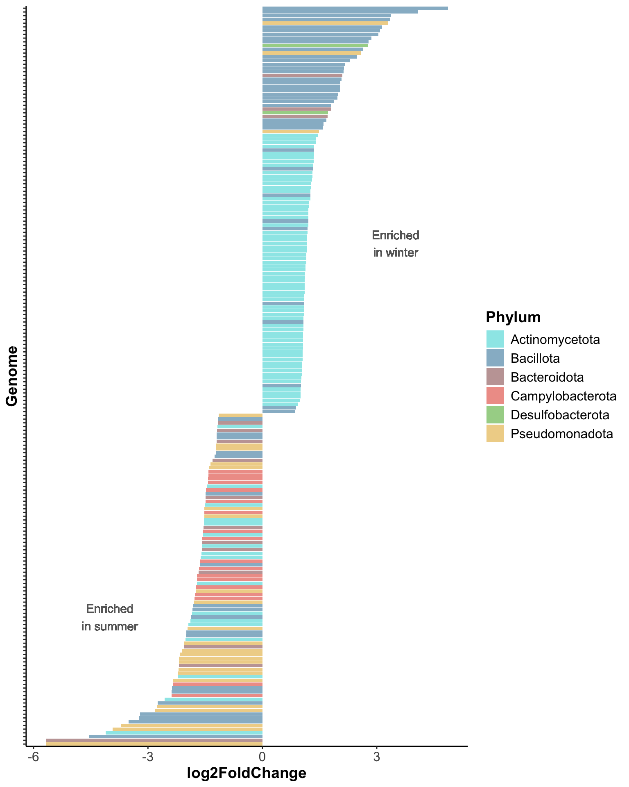
Enriched in summer
ancombc_rand_table_mag_itto %>%
filter(lfc_seasonwinter<0) %>%
arrange(lfc_seasonwinter) %>%
select(lfc_seasonwinter, genus, species) lfc_seasonwinter genus species
1 -5.667983 Citrobacter Citrobacter portucalensis
2 -5.664082 Bergeyella Bergeyella zoohelcum
3 -4.533354 Megamonas
4 -4.109774 Rhodococcus Rhodococcus sp002091985
5 -3.922793 Pseudomonas_E Pseudomonas_E lundensis
6 -3.706362 Parasutterella Parasutterella gallistercoris
7 -3.506938 Megamonas
8 -3.229180 Enterococcus_B Enterococcus_B faecium
9 -3.210466 Megamonas
10 -2.809421 Anaerobiospirillum Anaerobiospirillum succiniciproducens
11 -2.761605 Klebsiella Klebsiella pneumoniae
12 -2.745119 CAG-269 CAG-269 sp900553985
13 -2.560802 Glutamicibacter Glutamicibacter protophormiae
14 -2.379611 Campylobacter_D Campylobacter_D upsaliensis
15 -2.378537 Catellicoccus Catellicoccus marimammalium
16 -2.367896
17 -2.350044 Campylobacter_D Campylobacter_D upsaliensis
18 -2.344081 Giesbergeria
19 -2.223557 Bifidobacterium Bifidobacterium breve
20 -2.213142 Pseudomonas_E Pseudomonas_E taetrolens
21 -2.200262 Psychrobacter Psychrobacter maritimus
22 -2.189521 Flavobacterium Flavobacterium macacae
23 -2.183409 Plesiomonas Plesiomonas shigelloides
24 -2.182916 Brevundimonas
25 -2.167580 Providencia Providencia alcalifaciens
26 -2.112639 Pseudomonas_E Pseudomonas_E putida_H
27 -2.057878 Lepagella
28 -2.055503 Cellvibrio
29 -2.013998 Paeniglutamicibacter Paeniglutamicibacter gangotriensis
30 -2.006249 Merdicola Merdicola sp900754085
31 -1.994256 Weissella Weissella confusa
32 -1.963509 Pseudomonas_E Pseudomonas_E capsici
33 -1.936634 Bifidobacterium Bifidobacterium adolescentis
34 -1.882658 Knoellia
35 -1.876846 Lysinibacillus_B
36 -1.845455 Terracoccus
37 -1.828390 Megamonas Megamonas funiformis
38 -1.808163 Megamonas Megamonas funiformis
39 -1.805132 Anaerobiospirillum_A
40 -1.774119 Helicobacter_C Helicobacter_C magdeburgensis
41 -1.767103 Helicobacter_C Helicobacter_C magdeburgensis
42 -1.739226 Anaerobiospirillum
43 -1.737571 Helicobacter_C Helicobacter_C magdeburgensis
44 -1.718254 Bifidobacterium Bifidobacterium pseudocatenulatum
45 -1.714372 Helicobacter_C Helicobacter_C magdeburgensis
46 -1.709462 Helicobacter_B Helicobacter_B canis
47 -1.668651 Hanamia
48 -1.664091 Helicobacter_C Helicobacter_C magdeburgensis
49 -1.643863 Streptococcus Streptococcus thermophilus
50 -1.637762 Helicobacter_B Helicobacter_B canis_B
51 -1.616320 Collinsella Collinsella aerofaciens_H
52 -1.600635 JADKAV01
53 -1.588789 Bacteroides Bacteroides ovatus
54 -1.584995 Glutamicibacter Glutamicibacter soli
55 -1.574536 Amulumruptor Amulumruptor sp900539915
56 -1.571841 Helicobacter_C Helicobacter_C magdeburgensis
57 -1.559365 Bifidobacterium
58 -1.552282 Helicobacter_B Helicobacter_B canis
59 -1.538032 Parabacteroides Parabacteroides distasonis
60 -1.532376 Rothia Rothia sp030064065
61 -1.532343 Rothia Rothia kristinae
62 -1.522514 Succinivibrio Succinivibrio sp000431835
63 -1.517829 Helicobacter_C Helicobacter_C magdeburgensis
64 -1.516883 Giesbergeria
65 -1.507517 Sanguibacter Sanguibacter suarezii
66 -1.493055 Helicobacter_C Helicobacter_C magdeburgensis
67 -1.491538 Prevotella Prevotella sp900769055
68 -1.486979 Brotaphodocola Brotaphodocola sp900538475
69 -1.478398 Helicobacter_B Helicobacter_B canis
70 -1.462028 Eggerthella Eggerthella lenta
71 -1.427122 Helicobacter_B Helicobacter_B canis
72 -1.422052 Helicobacter_C Helicobacter_C magdeburgensis
73 -1.411476 Campylobacter_D Campylobacter_D upsaliensis
74 -1.411188 Helicobacter_B Helicobacter_B canis_B
75 -1.398392 Frederiksenia Frederiksenia canicola
76 -1.362526 JAUMXB01
77 -1.305725 Bacteroides Bacteroides stercoris
78 -1.249525 UBA2868
79 -1.223426 UMGS1370
80 -1.221354 Pasteurella Pasteurella dagmatis
81 -1.217794 Moraxella
82 -1.203323 Bacteroides Bacteroides eggerthii
83 -1.198990 Bhargavaea Bhargavaea massiliensis
84 -1.196821 UMGS1370
85 -1.183009 Bacteroides Bacteroides caccae
86 -1.179865 Granulimonas
87 -1.165385 Bacteroides Bacteroides finegoldii
88 -1.160296 Bacillus_AD
89 -1.141998 Lampropedia Lampropedia schreckenbergeriEnriched in winter
ancombc_rand_table_mag_itto %>%
filter(lfc_seasonwinter>0) %>%
arrange(-lfc_seasonwinter) %>%
select(lfc_seasonwinter, genus, species) lfc_seasonwinter genus species
1 4.8633104 Fimiplasma
2 4.0844222 Longicatena
3 3.3780631 Brotaphodocola
4 3.3405547 Ileibacterium
5 3.3029905 Anaerobiospirillum
6 3.1439972 Schaedlerella
7 3.0900164 Limosilactobacillus Limosilactobacillus reuteri
8 3.0400026 Fimiplasma
9 2.8618396 CALVGN01 CALVGN01 sp937900565
10 2.7841944 CALDMQ01
11 2.7633863 Taurinivorans
12 2.6495382 Faecalibacterium Faecalibacterium sp937880095
13 2.5764130 Aphodousia Aphodousia faecalis
14 2.4854801 Limosilactobacillus Limosilactobacillus reuteri_E
15 2.3033766 CALVGN01
16 2.1744734 CALUZH01
17 2.1431985 Faecalimonas
18 2.1249286 Blautia_A
19 2.0931877 Cryptobacteroides
20 2.0771112 CALUXS01
21 2.0396428 Avilachnospira
22 2.0304777 CALVGN01
23 2.0290664 Butyricicoccus
24 1.9860735 Faecalitalea
25 1.9641876 Faecalibacterium Faecalibacterium sp937880095
26 1.8762817 Schaedlerella
27 1.7992629 CAJMNU01 CAJMNU01 sp905214855
28 1.7967090 Cryptobacteroides
29 1.7209452 Taurinivorans
30 1.7086084 Cryptobacteroides
31 1.6800589
32 1.6074337 Faecalibacterium
33 1.5907867 Faecalimonas Faecalimonas sp026169575
34 1.4910625 Duodenibacillus
35 1.4661677 Collinsella Collinsella intestinalis
36 1.4075509 Collinsella Collinsella intestinalis
37 1.4061246 Collinsella Collinsella intestinalis
38 1.3599069 Collinsella Collinsella intestinalis
39 1.3557435 Schaedlerella
40 1.3535273 Collinsella Collinsella intestinalis
41 1.3440664 Collinsella Collinsella intestinalis
42 1.3440459 Collinsella Collinsella phocaeensis
43 1.3242480 Collinsella Collinsella intestinalis
44 1.3201643 Ventricola
45 1.3168950 Collinsella
46 1.3143344 Collinsella Collinsella intestinalis
47 1.3014026 Collinsella Collinsella intestinalis
48 1.2783438 Collinsella Collinsella intestinalis
49 1.2737581 Collinsella Collinsella intestinalis
50 1.2638346 Collinsella Collinsella intestinalis
51 1.2601782 Blautia
52 1.2567746 Collinsella Collinsella sp902364775
53 1.2273910 Collinsella Collinsella sp902364775
54 1.2156104 Collinsella Collinsella intestinalis
55 1.2114062 Collinsella Collinsella intestinalis
56 1.2105177 CALADF01
57 1.2094315 Collinsella Collinsella intestinalis
58 1.2073735 Faecalimonas
59 1.2016674 Collinsella Collinsella sp902364775
60 1.1896182 Blautia
61 1.1891409 Collinsella Collinsella intestinalis
62 1.1794532 Collinsella Collinsella intestinalis
63 1.1710576 Collinsella Collinsella intestinalis
64 1.1691226 Collinsella Collinsella intestinalis
65 1.1612899 Collinsella Collinsella intestinalis
66 1.1612118 Collinsella Collinsella intestinalis
67 1.1576087 Collinsella Collinsella intestinalis
68 1.1567126 Collinsella Collinsella intestinalis
69 1.1480033 Collinsella Collinsella intestinalis
70 1.1335216 Collinsella Collinsella intestinalis
71 1.1328883 Collinsella Collinsella intestinalis
72 1.1256228 Collinsella Collinsella sp902364775
73 1.1171316 Collinsella Collinsella intestinalis
74 1.1148860 Collinsella Collinsella intestinalis
75 1.1084546 Collinsella
76 1.1068131 Collinsella Collinsella intestinalis
77 1.1052199 Collinsella Collinsella intestinalis
78 1.0997039 Collinsella Collinsella intestinalis
79 1.0993716 Collinsella Collinsella sp902364775
80 1.0921659 Fimiplasma
81 1.0906322 Collinsella Collinsella intestinalis
82 1.0897351 Collinsella Collinsella intestinalis
83 1.0830206 Collinsella Collinsella intestinalis
84 1.0805440 Collinsella Collinsella sp902364775
85 1.0783045 Faecalimonas Faecalimonas sp026169575
86 1.0779028 Collinsella Collinsella intestinalis
87 1.0730096 Collinsella Collinsella intestinalis
88 1.0708832 Collinsella Collinsella sp902364775
89 1.0680028 Collinsella Collinsella intestinalis
90 1.0665581 Collinsella Collinsella intestinalis
91 1.0654211 Collinsella Collinsella intestinalis
92 1.0648746 Collinsella Collinsella intestinalis
93 1.0610109 Collinsella Collinsella intestinalis
94 1.0537310 Collinsella Collinsella intestinalis
95 1.0518969 Collinsella Collinsella intestinalis
96 1.0477518 Collinsella Collinsella intestinalis
97 1.0424561 Collinsella Collinsella intestinalis
98 1.0367060 Collinsella Collinsella intestinalis
99 1.0329309 Collinsella Collinsella intestinalis
100 1.0204909 Collinsella
101 1.0181090 Collinsella Collinsella intestinalis
102 1.0147599 Peptacetobacter Peptacetobacter sp900550335
103 1.0073882 Collinsella Collinsella intestinalis
104 1.0068477 Collinsella Collinsella intestinalis
105 1.0055619 Collinsella Collinsella intestinalis
106 0.9844612 Collinsella Collinsella intestinalis
107 0.9412316 Collinsella Collinsella intestinalis
108 0.8873271 Marvinbryantia Marvinbryantia sp937915375
109 0.8528009 Peptacetobacter Peptacetobacter sp90055033511.5 Functional differences
load("data/genome_gifts.Rdata")
genome_counts_filt <- genome_counts_filt %>%
filter(genome_counts_filt$genome %in% rownames(genome_gifts)) %>%
column_to_rownames(., "genome") %>%
filter(rowSums(. != 0, na.rm = TRUE) > 0) %>%
select_if(~!all(. == 0))%>%
rownames_to_column(., "genome")
genome_gifts <- genome_gifts[rownames(genome_gifts) %in% genome_counts_filt$genome,]
genome_gifts <- genome_gifts[, colSums(genome_gifts != 0) > 0]
GIFTs_elements <- to.elements(genome_gifts,GIFT_db)
GIFTs_elements_filtered <- GIFTs_elements[rownames(GIFTs_elements) %in% genome_counts_filt$genome,]
GIFTs_elements_filtered <- as.data.frame(GIFTs_elements_filtered) %>%
select_if(~ !is.numeric(.) || sum(.) != 0)
GIFTs_functions <- to.functions(GIFTs_elements_filtered,GIFT_db)
GIFTs_domains <- to.domains(GIFTs_functions,GIFT_db)
genome_counts_row <- genome_counts_filt %>%
mutate(across(-genome, ~ . / sum(.))) %>%
column_to_rownames(., "genome")
GIFTs_elements_community <- to.community(GIFTs_elements_filtered,genome_counts_row,GIFT_db)
GIFTs_functions_community <- to.community(GIFTs_functions,genome_counts_row,GIFT_db)
GIFTs_domains_community <- to.community(GIFTs_domains,genome_counts_row,GIFT_db)11.6 Groups MCI
GIFTs_functions_community %>%
rowMeans() %>%
as_tibble(., rownames = "sample") %>%
left_join(sample_metadata, by = join_by(sample == sample)) %>%
group_by(season) %>%
summarise(MCI = mean(value), sd = sd(value)) %>%
tt()| season | MCI | sd |
|---|---|---|
| summer | 0.3780040 | 0.008551282 |
| winter | 0.3799411 | 0.005198865 |
Shapiro test
MCI <- GIFTs_functions_community %>%
rowMeans() %>%
as_tibble(., rownames = "sample") %>%
left_join(sample_metadata, by = join_by(sample == sample))
shapiro.test(MCI$value)
Shapiro-Wilk normality test
data: MCI$value
W = 0.94344, p-value = 0.03449
Wilcoxon rank sum exact test
data: value by season
W = 186, p-value = 0.6726
alternative hypothesis: true location shift is not equal to 011.6.1 Community elements differences:
element_gift <- GIFTs_elements_community %>%
as.data.frame() %>%
rownames_to_column(., "sample") %>%
left_join(., sample_metadata %>% select(sample,season), by=("sample"))uniqueGIFT_db<- unique(GIFT_db[c(2,4,5,6)]) %>% unite("Function",Function:Element, sep= "_", remove=FALSE)
element_gift %>%
pivot_longer(-c(sample, season), names_to = "trait", values_to = "value") %>%
group_by(trait) %>%
summarise(p_value = wilcox.test(value ~ season)$p.value,
.groups = "drop") %>%
mutate(p_adjust = p.adjust(p_value, method = "BH")) %>%
filter(p_adjust < 0.05) %>%
left_join(., uniqueGIFT_db, by=join_by("trait"=="Code_element"))# A tibble: 0 × 6
# ℹ 6 variables: trait <chr>, p_value <dbl>, p_adjust <dbl>, Domain <chr>, Function <chr>, Element <chr>load("data/data.Rdata")
load("data/beta.Rdata")
genome_metadata <- genome_metadata %>%
mutate(phylum = case_when(
phylum == "Bacillota_A" ~ "Bacillota",
phylum == "Bacillota_C" ~ "Bacillota",
phylum == "Bacillota_B" ~ "Bacillota",
phylum == "Bacillota_I" ~ "Bacillota",
TRUE ~ phylum))
day_info <- read_csv("data/sample_metadata.csv")
sample_metadata <- sample_metadata %>%
left_join(., day_info %>% select(sample, animal, day, season), by="sample") %>%
filter(locality == "Ittoqqortoormiit" & season=="winter")%>%
filter(!day %in% c("day_6", "day_7")) %>%
mutate(animal_id = str_remove(animal, "\\d$"))
genome_counts_filt <- genome_counts_filt %>%
select(one_of(c("genome",sample_metadata$sample)))%>%
filter(rowSums(. != 0, na.rm = TRUE) > 0) %>%
select_if(~!all(. == 0))
genome_metadata <- genome_metadata %>%
semi_join(., genome_counts_filt, by = "genome") %>%
arrange(match(genome,genome_counts_filt$genome))
genome_tree <- keep.tip(genome_tree, tip=genome_metadata$genome)11.7 Taxonomy overview
genome_counts_filt %>%
mutate_at(vars(-genome), ~ . / sum(.)) %>%
pivot_longer(-genome, names_to = "sample", values_to = "count") %>%
left_join(., genome_metadata, by = join_by(genome == genome)) %>%
left_join(., sample_metadata, by = join_by(sample == sample)) %>%
filter(count > 0) %>%
ggplot(., aes(x=animal_id, y=count, fill=phylum, group=phylum)) +
geom_bar(stat="identity", colour="white", linewidth=0.1) +
scale_fill_manual(values=phylum_colors) +
facet_grid(~ day, scale="free", space="free")+
guides(fill = guide_legend(ncol = 1)) +
theme(
axis.title.x = element_blank(),
panel.background = element_blank(),
panel.border = element_blank(),
panel.grid.major = element_blank(),
panel.grid.minor = element_blank(),
strip.background = element_rect(fill = "white"),
strip.text = element_text(size = 12, lineheight = 0.6),
strip.placement = "outside",
axis.text.x = element_text(size = 10, angle=45, hjust = 1),
axis.ticks.x = element_blank(),
axis.line = element_line(
linewidth = 0.5,
linetype = "solid",
colour = "black")
) +
labs(fill = "Phylum", y = "Relative abundance", x = "Samples")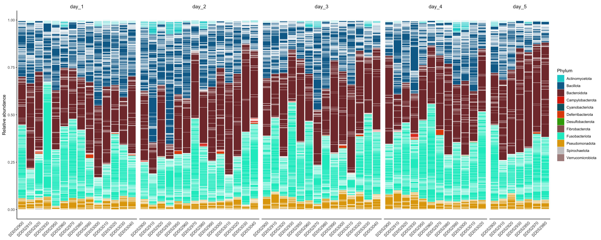
11.7.1 Phylum relative abundances
phylum_summary <- genome_counts_filt %>%
mutate_at(vars(-genome),~./sum(.)) %>%
pivot_longer(-genome, names_to = "sample", values_to = "count") %>%
left_join(sample_metadata, by = join_by(sample == sample)) %>%
left_join(genome_metadata, by = join_by(genome == genome)) %>%
group_by(sample,phylum, day) %>%
summarise(relabun=sum(count))phylum_summary %>%
group_by(day, phylum) %>%
summarise(
n = sum(!is.na(relabun)),
total_mean = mean(relabun * 100, na.rm = TRUE),
total_sd = ifelse(n > 1, sd(relabun * 100, na.rm = TRUE), 0),
.groups = "drop"
) %>%
arrange(desc(total_mean)) %>% # ← reorder rows only
mutate(
total = stringr::str_c(round(total_mean, 3), "±", round(total_sd, 3))
) %>%
dplyr::select(phylum, day, total) %>%
pivot_wider(names_from = "day", values_from = "total", names_sort = FALSE) %>%
select(phylum, day_1, day_2, day_3, day_4, day_5) %>%
tt()| phylum | day_1 | day_2 | day_3 | day_4 | day_5 |
|---|---|---|---|---|---|
| Bacteroidota | 31.092±11.307 | 34.137±11.335 | 35.588±9.352 | 31.965±9.592 | 45.132±8.896 |
| Fusobacteriota | 29.963±12.727 | 25.891±8.827 | 30.821±10.68 | 33.716±8.905 | 28.588±7.598 |
| Bacillota | 30.95±5.326 | 31.611±13.829 | 24.748±8.883 | 25.483±9.052 | 18.859±7.501 |
| Pseudomonadota | 5.409±1.419 | 4.327±1.329 | 6.539±2.074 | 6.032±2.005 | 5.557±1.399 |
| Actinomycetota | 1.837±0.999 | 3.094±2.557 | 1.523±1.368 | 1.843±1.929 | 1.448±1.008 |
| Campylobacterota | 0.261±0.276 | 0.545±0.721 | 0.365±0.327 | 0.369±0.679 | 0.164±0.1 |
| Deferribacterota | 0.352±0.518 | 0.31±0.54 | 0.26±0.41 | 0.413±0.801 | 0.189±0.322 |
| Spirochaetota | 0.087±0.157 | 0.039±0.05 | 0.094±0.124 | 0.099±0.15 | 0.038±0.052 |
| Desulfobacterota | 0.03±0.066 | 0.029±0.061 | 0.045±0.076 | 0.063±0.111 | 0.002±0.001 |
| Cyanobacteriota | 0.018±0.013 | 0.017±0.012 | 0.016±0.008 | 0.017±0.007 | 0.024±0.008 |
| Verrucomicrobiota | 0±0 | 0±0 | 0±0 | 0±0 | 0±0 |
| Fibrobacterota | 0±0 | 0±0 | 0±0 | 0±0 | 0±0 |
11.8 Alpha diversity
richness <- genome_counts_filt %>%
column_to_rownames(var = "genome") %>%
dplyr::select(where(~ !all(. == 0))) %>%
hilldiv(., q = 0) %>%
t() %>%
as.data.frame() %>%
dplyr::rename(richness = 1) %>%
rownames_to_column(var = "sample")
neutral <- genome_counts_filt %>%
column_to_rownames(var = "genome") %>%
dplyr::select(where(~ !all(. == 0))) %>%
hilldiv(., q = 1) %>%
t() %>%
as.data.frame() %>%
dplyr::rename(neutral = 1) %>%
rownames_to_column(var = "sample")
phylogenetic <- genome_counts_filt %>%
column_to_rownames(var = "genome") %>%
dplyr::select(where(~ !all(. == 0))) %>%
hilldiv(., q = 1, tree = genome_tree) %>%
t() %>%
as.data.frame() %>%
dplyr::rename(phylogenetic = 1) %>%
rownames_to_column(var = "sample")
alpha_div <- richness %>%
full_join(neutral, by = join_by(sample == sample)) %>%
full_join(phylogenetic, by = join_by(sample == sample))alpha_div %>%
pivot_longer(-sample, names_to = "metric", values_to = "value") %>%
mutate(metric=factor(metric,levels=c("richness","neutral","phylogenetic", "functional"))) %>%
left_join(sample_metadata, by = join_by(sample == sample)) %>%
ggplot(aes(y = value, x = day, group=day, color=day, fill=day)) +
geom_boxplot(alpha = 0.5, outlier.shape = NA) +
geom_jitter(width = 0.2, alpha = 0.5) +
facet_wrap(. ~factor(metric, labels=c("richness" = "Richness", "neutral" = "Neutral", "phylogenetic" = "Phylogenetic")), scales = "free", ncol = 5) +
coord_cartesian(xlim = c(1, NA)) +
theme_classic() +
theme(
strip.background = element_blank(),
strip.text = element_text(size =12, lineheight = 0.6),
panel.grid.minor.x = element_line(size = .1, color = "grey"),
axis.title.x = element_blank(),
axis.title.y = element_blank(),
axis.text.x = element_blank()
)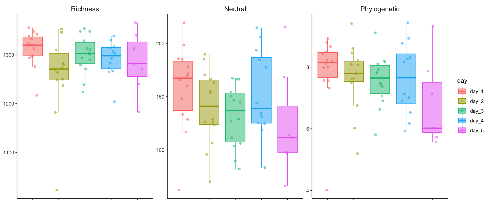
alpha_div %>%
pivot_longer(-sample, names_to = "metric", values_to = "value") %>%
mutate(metric = factor(metric, levels = c("richness","neutral","phylogenetic"))) %>%
left_join(sample_metadata, by = "sample") %>%
ggplot(aes(x = day, y = value, group = animal_id, color = day)) +
geom_boxplot(aes(group = day, fill = day), alpha = 0.5, outlier.shape = NA) +
geom_line(alpha = 0.4) + # ← connects same animal across days
geom_jitter(width = 0.2, alpha = 0.5) +
facet_wrap(
~ factor(metric, labels = c(
"richness" = "Richness",
"neutral" = "Neutral",
"phylogenetic" = "Phylogenetic")),
scales = "free",
ncol = 5
) +
coord_cartesian(xlim = c(1, NA)) +
theme_classic() +
theme(
strip.background = element_blank(),
strip.text = element_text(size = 12, lineheight = 0.6),
panel.grid.minor.x = element_line(size = .1, color = "grey"),
axis.title.x = element_blank(),
axis.title.y = element_blank(),
axis.text.x = element_blank()
)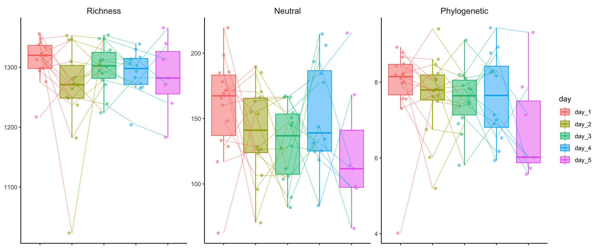
alpha_div %>%
pivot_longer(-sample, names_to = "alpha", values_to = "value") %>%
left_join(sample_metadata, by = join_by(sample == sample)) %>%
group_by(day, alpha) %>%
summarise(
total_mean = mean(value, na.rm = T),
total_sd = sd(value, na.rm = T)
) %>%
mutate(
total = str_c(round(total_mean, 3), "±", round(total_sd, 3))
) %>%
arrange(-total_mean) %>%
dplyr::select(alpha, day, total) %>%
pivot_wider(names_from = alpha, values_from = total) %>%
tt()| day | richness | neutral | phylogenetic |
|---|---|---|---|
| day_1 | 1312.571±35.66 | 158.764±39.269 | 7.874±1.207 |
| day_3 | 1300.357±38.814 | 131.834±29.108 | 7.558±0.805 |
| day_4 | 1291.25±36.484 | 153.127±40.824 | 7.629±1.158 |
| day_5 | 1285±61.919 | 124.298±50.543 | 6.81±1.383 |
| day_2 | 1261.786±83.336 | 140.017±34.845 | 7.654±1.071 |
11.9 Beta diversity
#Neutral
samples_to_keep <- sample_metadata %>%
select(sample) %>%
pull()
neutral <- as.matrix(beta_q1n$S)
neutral_sub <- neutral[samples_to_keep, samples_to_keep]
neutral_dis <- as.dist(neutral_sub)
# sample_metadata_ordered <- sample_metadata %>%
# arrange(match(sample,labels(neutral_dis))) %>%
# column_to_rownames(., "sample")
sample_metadata_ordered <- sample_metadata %>%
filter(sample %in% samples_to_keep) %>%
column_to_rownames("sample") %>%
.[labels(neutral_dis), ]
sample_metadata_ordered_row <- sample_metadata %>%
arrange(match(sample,labels(neutral_dis)))
disp <- betadisper(neutral_dis, sample_metadata_ordered$day)
anova(disp)Analysis of Variance Table
Response: Distances
Df Sum Sq Mean Sq F value Pr(>F)
Groups 4 0.02917 0.0072915 0.7886 0.5375
Residuals 56 0.51776 0.0092458 adonis2(
neutral_dis ~ day,
data = sample_metadata_ordered,
permutations = how(blocks = sample_metadata_ordered$animal_id)
)Permutation test for adonis under reduced model
Blocks: sample_metadata_ordered$animal_id
Permutation: free
Number of permutations: 199
adonis2(formula = neutral_dis ~ day, data = sample_metadata_ordered, permutations = how(blocks = sample_metadata_ordered$animal_id))
Df SumOfSqs R2 F Pr(>F)
Model 4 0.5818 0.11102 1.7484 0.005 **
Residual 56 4.6589 0.88898
Total 60 5.2407 1.00000
---
Signif. codes: 0 '***' 0.001 '**' 0.01 '*' 0.05 '.' 0.1 ' ' 1neutral_dis %>%
vegan::metaMDS(., trymax = 500, k = 2, trace=0) %>%
vegan::scores() %>%
as_tibble(., rownames = "sample") %>%
dplyr::left_join(sample_metadata, by = join_by(sample == sample)) %>%
group_by(animal_id) %>%
mutate(x_cen = mean(NMDS1, na.rm = TRUE)) %>%
mutate(y_cen = mean(NMDS2, na.rm = TRUE)) %>%
ungroup() %>%
ggplot(aes(x = NMDS1, y = NMDS2, color = animal_id)) +
geom_point(size = 3, alpha = 0.5) +
geom_segment(aes(x = x_cen, y = y_cen, xend = NMDS1, yend = NMDS2), alpha = 0.5, show.legend = FALSE) +
theme_classic() +
theme(
axis.text.x = element_text(size = 12),
axis.text.y = element_text(size = 12),
axis.title = element_text(size = 12, face = "bold"),
axis.text = element_text(face = "bold", size = 12),
panel.background = element_blank(),
axis.line = element_line(
size = 0.5,
linetype = "solid",
colour = "black"
),
legend.text = element_text(size = 12),
legend.title = element_text(size = 14),
legend.position = "right",
legend.box = "vertical"
)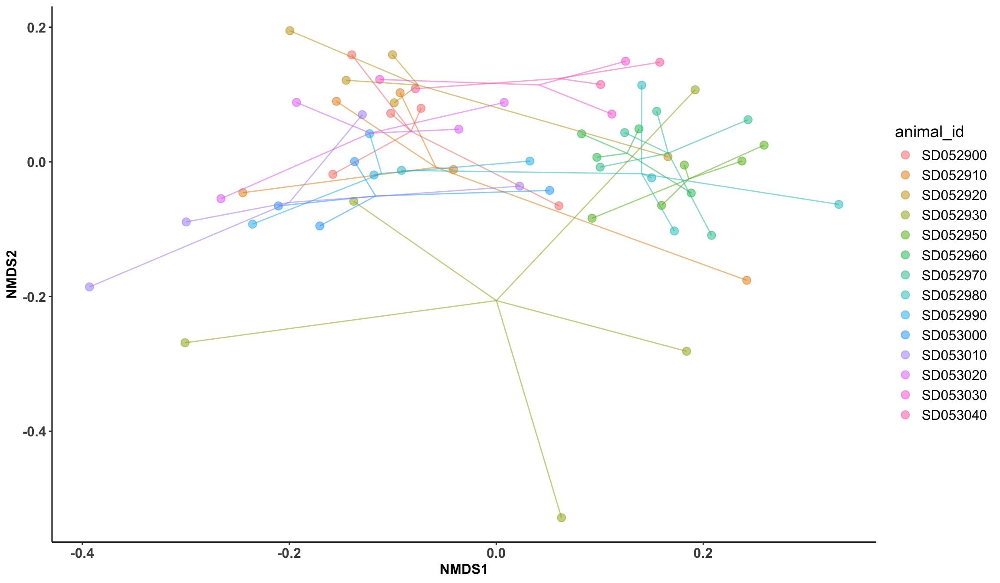
neutral_dis %>%
vegan::metaMDS(., trymax = 500, k = 2, trace=0) %>%
vegan::scores() %>%
as_tibble(., rownames = "sample") %>%
dplyr::left_join(sample_metadata, by = join_by(sample == sample)) %>%
group_by(day) %>%
mutate(x_cen = mean(NMDS1, na.rm = TRUE)) %>%
mutate(y_cen = mean(NMDS2, na.rm = TRUE)) %>%
ungroup() %>%
ggplot(aes(x = NMDS1, y = NMDS2, color = day)) +
geom_point(size = 3, alpha = 0.5) +
geom_segment(aes(x = x_cen, y = y_cen, xend = NMDS1, yend = NMDS2), alpha = 0.5, show.legend = FALSE) +
theme_classic() +
theme(
axis.text.x = element_text(size = 12),
axis.text.y = element_text(size = 12),
axis.title = element_text(size = 12, face = "bold"),
axis.text = element_text(face = "bold", size = 12),
panel.background = element_blank(),
axis.line = element_line(
size = 0.5,
linetype = "solid",
colour = "black"
),
legend.text = element_text(size = 12),
legend.title = element_text(size = 14),
legend.position = "right",
legend.box = "vertical"
)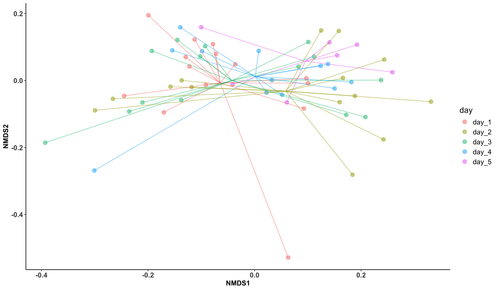
cca_ord <- capscale(neutral_dis ~ day, data = sample_metadata_ordered)
CAP_df <- as.data.frame(vegan::scores(cca_ord, display = "sites")) %>%
rownames_to_column('sample') %>%
left_join(sample_metadata_ordered_row, by = 'sample') %>%
column_to_rownames('sample')%>%
mutate(x_cen = mean(CAP1, na.rm = TRUE)) %>%
mutate(y_cen = mean(CAP2, na.rm = TRUE))
CAP_df %>%
ggplot(aes(CAP1, CAP2, color = day, group = animal_id)) +
geom_point() +
geom_path(alpha = 0.4) +
theme_classic()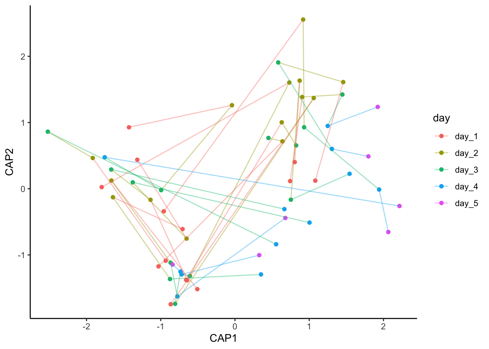